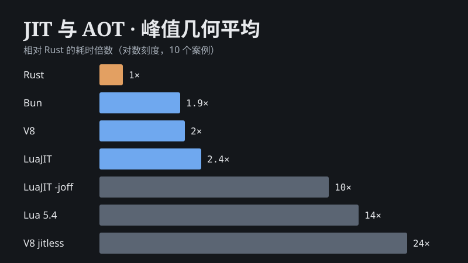
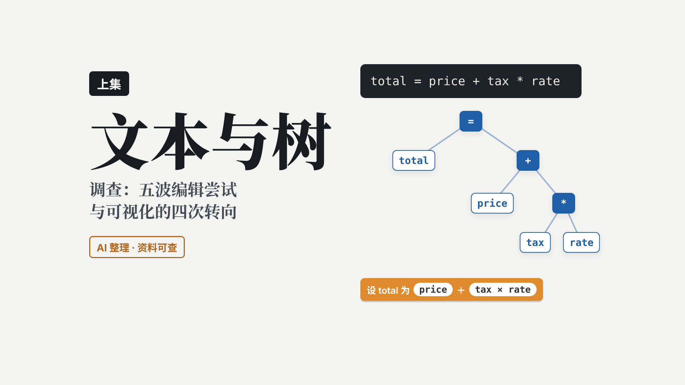
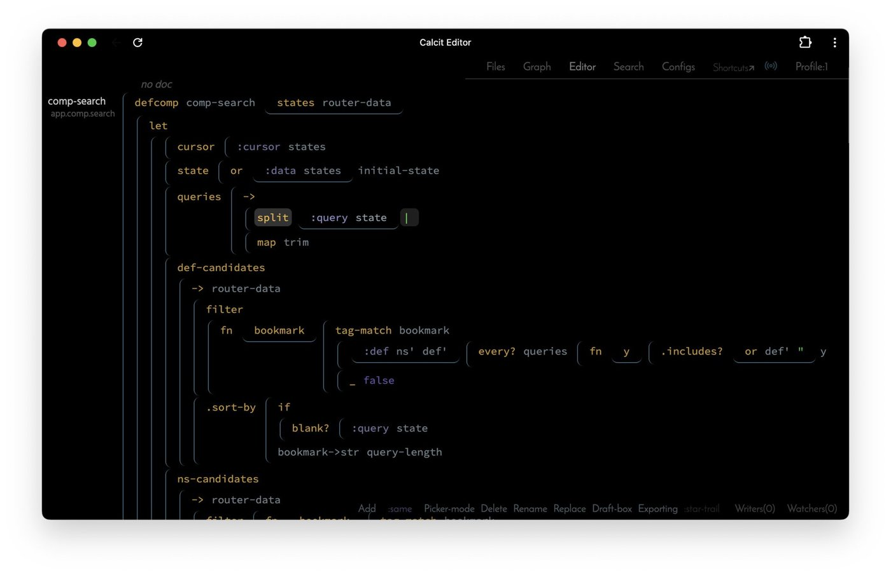

代数作用 · 历史、功能与实现
可以恢复的异常：从定界续延、单子到 Plotkin 的作用处理器；异常、注入、生成器、协程、回溯的统一写法；作用类型，以及纤程、证据传递、CPS、WasmFX 四种实现。
AI 协作制作的讲解视频与调研资料的网页版本。视频页面就是生成视频时逐帧渲染的同一套代码，在浏览器里可以直接播放、拖动（无配音，字幕同步）；视频文件本身不放在这里。
可以恢复的异常：从定界续延、单子到 Plotkin 的作用处理器；异常、注入、生成器、协程、回溯的统一写法；作用类型，以及纤程、证据传递、CPS、WasmFX 四种实现。

V8、Bun、LuaJIT、Rust、LLVM（AOT / ORC JIT / Wasm）在 10 个同算法案例上的峰值、首轮、预热、启动、内存与构建成本，配公开基准与论文。云沙箱实测，只看倍数。

代码结构化编辑与代码可视化：五波尝试的调查、八条规律、AI 背景下的八个判断；番外逐个演示十个结构化编辑器的实际操作。

代码结构化编辑与代码可视化：五波尝试的得失、对比表、规律与 AI 背景下的判断。三集视频的提纲与调研。
1628–1636 年小说中的工程、建筑与航线，卫星图今昔对照。AI 整理，未经逐章核实。
上集讲心理学原理与方法论，下集讲搭建一套设计规范：颜色、排版、动效、装饰与治理。
图片来源与授权见各页面标注。源码与稿子：github.com/Memkits/desk